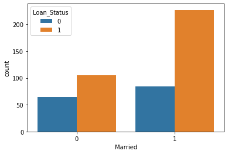

# education & Loan Status
sns.countplot(x='Education',hue='Loan_Status',data=loan_dataset)<AxesSubplot:xlabel='Education', ylabel='count'>
import numpy as np
import pandas as pd
import seaborn as sns
from sklearn.model_selection import train_test_split
from sklearn import svm
from sklearn.metrics import accuracy_score# loading the dataset to pandas DataFrame
loan_dataset = pd.read_csv('train_u6lujuX_CVtuZ9i.csv')# printing the first 5 rows of the dataframe
loan_dataset.head()| Loan_ID | Gender | Married | Dependents | Education | Self_Employed | ApplicantIncome | CoapplicantIncome | LoanAmount | Loan_Amount_Term | Credit_History | Property_Area | Loan_Status | |
|---|---|---|---|---|---|---|---|---|---|---|---|---|---|
| 0 | LP001002 | Male | No | 0 | Graduate | No | 5849 | 0.0 | NaN | 360.0 | 1.0 | Urban | Y |
| 1 | LP001003 | Male | Yes | 1 | Graduate | No | 4583 | 1508.0 | 128.0 | 360.0 | 1.0 | Rural | N |
| 2 | LP001005 | Male | Yes | 0 | Graduate | Yes | 3000 | 0.0 | 66.0 | 360.0 | 1.0 | Urban | Y |
| 3 | LP001006 | Male | Yes | 0 | Not Graduate | No | 2583 | 2358.0 | 120.0 | 360.0 | 1.0 | Urban | Y |
| 4 | LP001008 | Male | No | 0 | Graduate | No | 6000 | 0.0 | 141.0 | 360.0 | 1.0 | Urban | Y |
# number of rows and columns
loan_dataset.shape(614, 13)# statistical measures
loan_dataset.describe()| ApplicantIncome | CoapplicantIncome | LoanAmount | Loan_Amount_Term | Credit_History | |
|---|---|---|---|---|---|
| count | 614.000000 | 614.000000 | 592.000000 | 600.00000 | 564.000000 |
| mean | 5403.459283 | 1621.245798 | 146.412162 | 342.00000 | 0.842199 |
| std | 6109.041673 | 2926.248369 | 85.587325 | 65.12041 | 0.364878 |
| min | 150.000000 | 0.000000 | 9.000000 | 12.00000 | 0.000000 |
| 25% | 2877.500000 | 0.000000 | 100.000000 | 360.00000 | 1.000000 |
| 50% | 3812.500000 | 1188.500000 | 128.000000 | 360.00000 | 1.000000 |
| 75% | 5795.000000 | 2297.250000 | 168.000000 | 360.00000 | 1.000000 |
| max | 81000.000000 | 41667.000000 | 700.000000 | 480.00000 | 1.000000 |
# number of missing values in each column
loan_dataset.isnull().sum()Loan_ID 0
Gender 13
Married 3
Dependents 15
Education 0
Self_Employed 32
ApplicantIncome 0
CoapplicantIncome 0
LoanAmount 22
Loan_Amount_Term 14
Credit_History 50
Property_Area 0
Loan_Status 0
dtype: int64loan_dataset.shape(614, 13)# dropping the missing values
loan_dataset = loan_dataset.dropna()# number of missing values in each column
loan_dataset.isnull().sum()Loan_ID 0
Gender 0
Married 0
Dependents 0
Education 0
Self_Employed 0
ApplicantIncome 0
CoapplicantIncome 0
LoanAmount 0
Loan_Amount_Term 0
Credit_History 0
Property_Area 0
Loan_Status 0
dtype: int64Label Encoding
# Dependent column values
loan_dataset['Dependents'].value_counts()0 274
2 85
1 80
3+ 41
Name: Dependents, dtype: int64## Labelling 0 & 1 for Dependents
loan_dataset = loan_dataset.replace(to_replace='3+', value=4)
loan_dataset['Dependents'].value_counts()0 274
2 85
1 80
4 41
Name: Dependents, dtype: int64#convert Categorical data into numerical
loan_dataset.replace({'Married':{'No':0,'Yes':1},'Gender':{'Male':1,'Female':0},'Self_Employed':{'No':0,'Yes':1},
'Property_Area':{'Rural':0,'Semiurban':1,'Urban':2},'Education':{'Graduate':1,'Not Graduate':0}},inplace=True)loan_dataset.replace({"Loan_Status":{'N':0,'Y':1}},inplace=True)loan_dataset.head()| Loan_ID | Gender | Married | Dependents | Education | Self_Employed | ApplicantIncome | CoapplicantIncome | LoanAmount | Loan_Amount_Term | Credit_History | Property_Area | Loan_Status | |
|---|---|---|---|---|---|---|---|---|---|---|---|---|---|
| 1 | LP001003 | 1 | 1 | 1 | 1 | 0 | 4583 | 1508.0 | 128.0 | 360.0 | 1.0 | 0 | 0 |
| 2 | LP001005 | 1 | 1 | 0 | 1 | 1 | 3000 | 0.0 | 66.0 | 360.0 | 1.0 | 2 | 1 |
| 3 | LP001006 | 1 | 1 | 0 | 0 | 0 | 2583 | 2358.0 | 120.0 | 360.0 | 1.0 | 2 | 1 |
| 4 | LP001008 | 1 | 0 | 0 | 1 | 0 | 6000 | 0.0 | 141.0 | 360.0 | 1.0 | 2 | 1 |
| 5 | LP001011 | 1 | 1 | 2 | 1 | 1 | 5417 | 4196.0 | 267.0 | 360.0 | 1.0 | 2 | 1 |
Data Visualization
# education & Loan Status
sns.countplot(x='Education',hue='Loan_Status',data=loan_dataset)<AxesSubplot:xlabel='Education', ylabel='count'>
# marital status & Loan Status
sns.countplot(x='Married',hue='Loan_Status',data=loan_dataset)<AxesSubplot:xlabel='Married', ylabel='count'>
# separating the data and label
X = loan_dataset.drop(columns=['Loan_ID','Loan_Status'],axis=1)
Y = loan_dataset['Loan_Status']print(X)
print(Y) Gender Married Dependents Education Self_Employed ApplicantIncome \
1 1 1 1 1 0 4583
2 1 1 0 1 1 3000
3 1 1 0 0 0 2583
4 1 0 0 1 0 6000
5 1 1 2 1 1 5417
.. ... ... ... ... ... ...
609 0 0 0 1 0 2900
610 1 1 4 1 0 4106
611 1 1 1 1 0 8072
612 1 1 2 1 0 7583
613 0 0 0 1 1 4583
CoapplicantIncome LoanAmount Loan_Amount_Term Credit_History \
1 1508.0 128.0 360.0 1.0
2 0.0 66.0 360.0 1.0
3 2358.0 120.0 360.0 1.0
4 0.0 141.0 360.0 1.0
5 4196.0 267.0 360.0 1.0
.. ... ... ... ...
609 0.0 71.0 360.0 1.0
610 0.0 40.0 180.0 1.0
611 240.0 253.0 360.0 1.0
612 0.0 187.0 360.0 1.0
613 0.0 133.0 360.0 0.0
Property_Area
1 0
2 2
3 2
4 2
5 2
.. ...
609 0
610 0
611 2
612 2
613 1
[480 rows x 11 columns]
1 0
2 1
3 1
4 1
5 1
..
609 1
610 1
611 1
612 1
613 0
Name: Loan_Status, Length: 480, dtype: int64
Train Test Split
X_train, X_test,Y_train,Y_test = train_test_split(X,Y,test_size=0.1,stratify=Y,random_state=2)print(X.shape, X_train.shape, X_test.shape)(480, 11) (432, 11) (48, 11)
Training the model:
Logistic Regression
from sklearn.linear_model import LogisticRegression
from sklearn.metrics import accuracy_score
from sklearn.metrics import confusion_matrix
from sklearn.metrics import classification_report
classifier=LogisticRegression()
classifier.fit(X_train,Y_train)
pred=classifier.predict(X_test)
print("Model Accuracy:- ",accuracy_score(Y_test,pred))
print(confusion_matrix(Y_test,pred))
print(classification_report(Y_test,pred))Model Accuracy:- 0.8333333333333334
[[ 9 6]
[ 2 31]]
precision recall f1-score support
0 0.82 0.60 0.69 15
1 0.84 0.94 0.89 33
accuracy 0.83 48
macro avg 0.83 0.77 0.79 48
weighted avg 0.83 0.83 0.83 48
C:\ProgramData\Anaconda3\lib\site-packages\sklearn\linear_model\_logistic.py:763: ConvergenceWarning: lbfgs failed to converge (status=1):
STOP: TOTAL NO. of ITERATIONS REACHED LIMIT.
Increase the number of iterations (max_iter) or scale the data as shown in:
https://scikit-learn.org/stable/modules/preprocessing.html
Please also refer to the documentation for alternative solver options:
https://scikit-learn.org/stable/modules/linear_model.html#logistic-regression
n_iter_i = _check_optimize_result(
Support Vector Machine
from sklearn.svm import SVC
classifier = SVC(kernel='linear')
#training the support Vector Macine model
classifier.fit(X_train,Y_train)SVC(kernel='linear')#Model Evaluation
# accuracy score on training data
X_train_prediction = classifier.predict(X_train)
training_data_accuray = accuracy_score(X_train_prediction,Y_train)print('Accuracy on training data : ', training_data_accuray)Accuracy on training data : 0.7986111111111112
# accuracy score on training data
X_test_prediction = classifier.predict(X_test)
test_data_accuray = accuracy_score(X_test_prediction,Y_test)print('Accuracy on test data : ', test_data_accuray)Accuracy on test data : 0.8333333333333334
Making a Predictive System
Saving the model
import pickle
# now you can save it to a file
file = 'serialized.pkl'
with open(file,'wb') as f:
pickle.dump(classifier,f)
#pickle.dump(classifier,open(file,'wb))#loading the saved model
model = pickle.load(open('serialized.pkl','rb'))